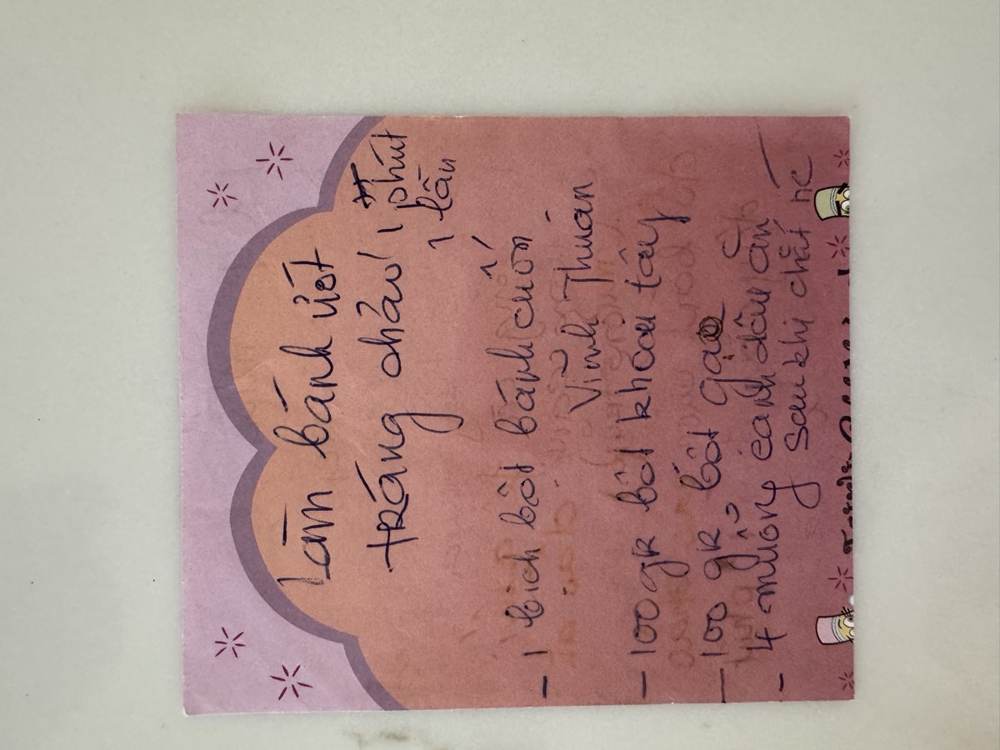
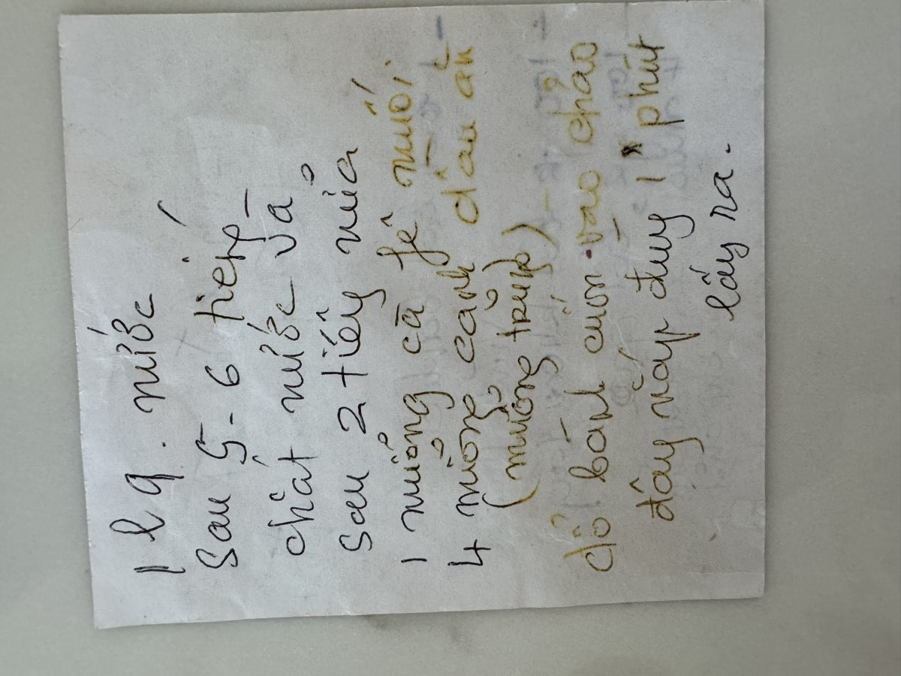

← Back to recipes
Bánh Ướt
Steamed Rice Sheets
From Mẹ — Oanh
Nguyên liệu · Ingredients
- 1 bag Vinh Thuan bánh cuốn flour
- 100g potato starch (bột khoai tây)
- 100g rice flour (bột gạo)
- 4 tablespoons vegetable oil
- 1 liter water
- 1 teaspoon salt
Ăn kèm · To Serve
- Chả lụa (Vietnamese pork sausage), sliced
- Nem chua (fermented pork roll), sliced
- Fried shallots (hành phi)
- Fresh herbs: Vietnamese mint (rau răm), perilla (tía tô), lettuce
- Nước mắm pha (dipping sauce)
- Scallion oil (optional)
Cách làm · Instructions
- Combine the Vinh Thuan bánh cuốn flour, potato starch, and rice flour in a large bowl. Add the water gradually, whisking to form a smooth batter with no lumps. Add the salt and oil, then mix well.
- Let the batter soak for 5–6 hours, or overnight in the refrigerator. This resting time allows the starches to fully hydrate.
- When ready to cook, stir the batter well as it will have settled. It should be the consistency of thin cream.
- Heat a large non-stick pan or flat steamer over medium heat. Lightly brush with oil.
- Pour a thin layer of batter onto the pan, swirling quickly to spread it as thin as possible — the thinner the better. Cover with a lid.
- Steam for about 1 minute, until the sheet turns from white to translucent. You'll see it begin to pull away from the edges.
- Carefully peel the rice sheet off the pan using a thin spatula or chopstick. Lay it flat on a lightly oiled plate or cutting board. Work gently — they tear easily.
- Repeat with the remaining batter, oiling the pan between each sheet. Stack the sheets with a light brush of oil between them so they don't stick.
- To serve, fold or roll the sheets loosely. Top with fried shallots and scallion oil. Arrange the chả lụa, nem chua, and fresh herbs on the side. Serve with nước mắm pha for dipping.
Công thức gốc · Original handwritten recipe


❦
A recipe from Mẹ's kitchen